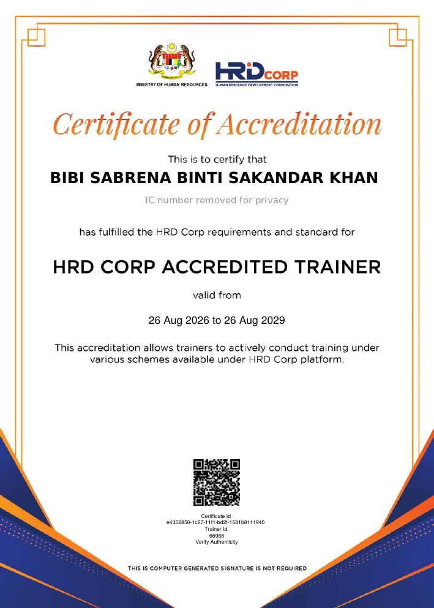
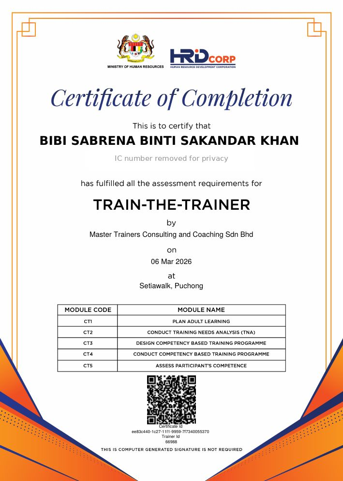
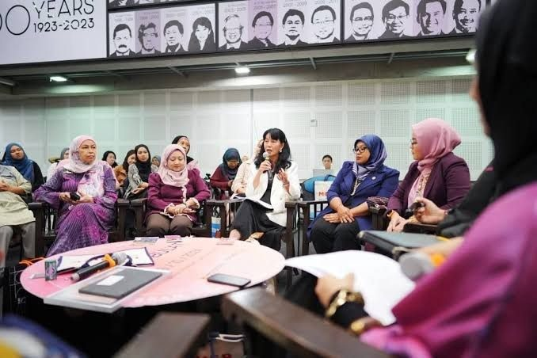
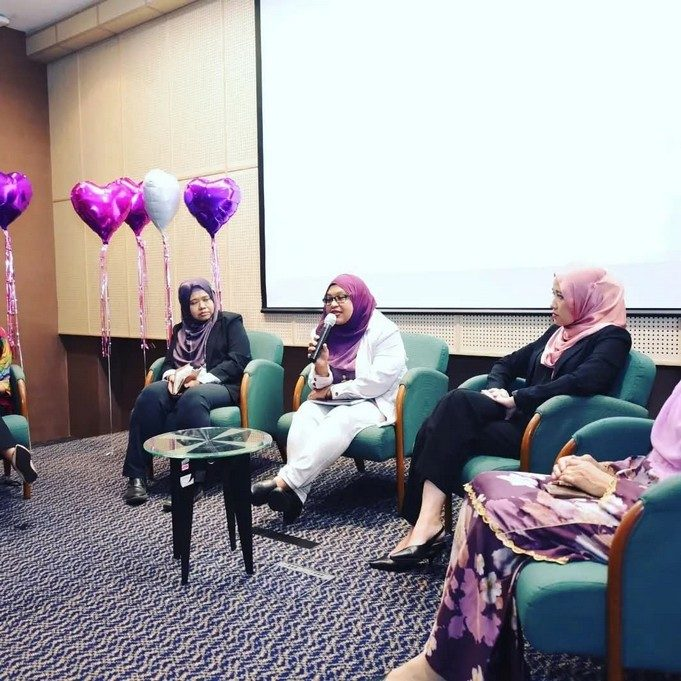
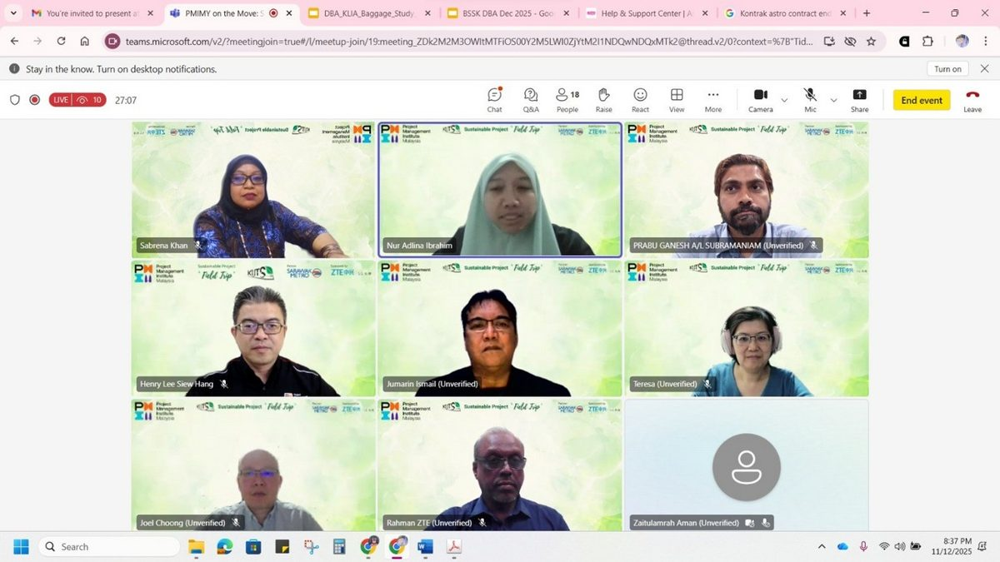
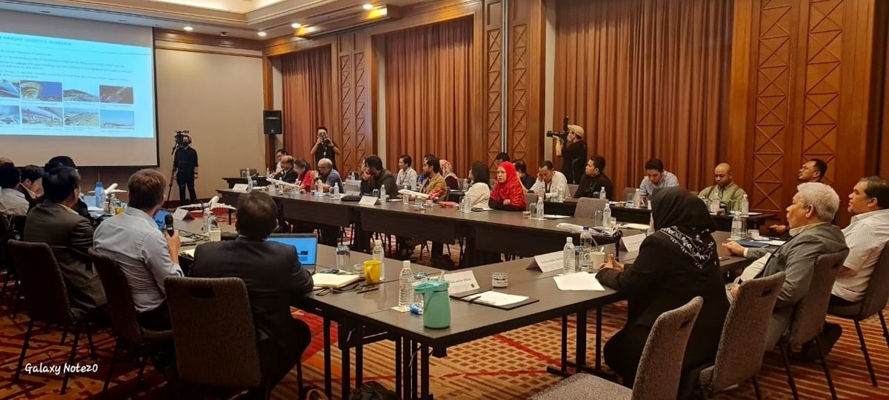
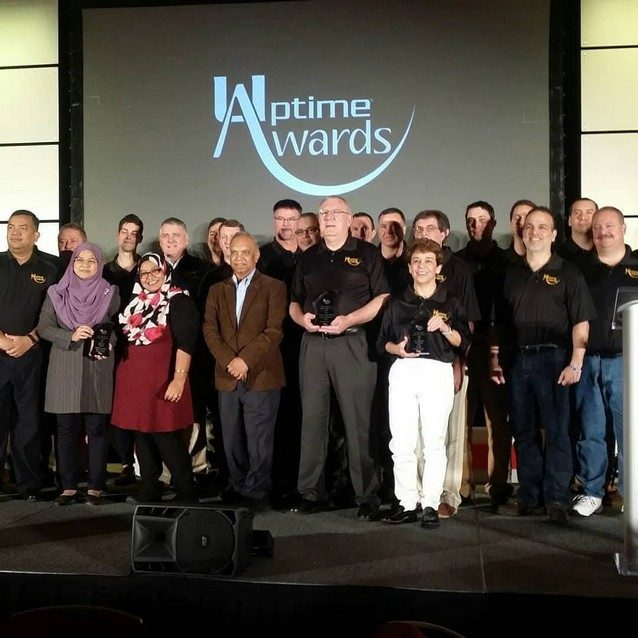

Ir. Ts. Dr. Bibi Sabrena Sakandar Khan, PMP®
Principal Advisor, Grit Guts & Gusto Advisory. Practitioner trainer in project leadership, crisis management and stakeholder management.
Who we are
Grit Guts & Gusto Advisory is a Malaysian training and advisory practice led by Ir. Ts. Dr. Bibi Sabrena Sakandar Khan. It brings more than 20 years of airport engineering and project delivery at Malaysia Airports, across 32 airports, into the classroom and the meeting room.
For five years Sabrena led the KLIA Aerotrain replacement, a safety-critical project inside a live international airport, from business case to revenue service on 30 June 2025. The practice takes its name from the mantra that carried that project.
Her training style is simple, direct and fun. Short inputs, then practice through case studies, role plays and live simulations. Every programme ends with an action plan that each participant takes back to the job.
Career highlights
- Project Director, KLIA Client Office (2020 to 2026)Led the RM700 million Aerotrain replacement through commissioning, regulatory approval and revenue service.
- RM1.2 billion baggage handling system replacementBrought the programme to contract award after a five-year stall.
- Head of Engineering, KLIA Terminals 1 and 2Led nearly 300 staff with an annual operations and maintenance budget of about RM200 million.
- DigitalisationLed the move to an electronic document management system and an award-winning dashboard for quality-of-service monitoring.
Oh, that's me at the end!
Malaysia Airports shared this reel on their official Instagram in February 2025. Watch until the end: that's me, talking about safety.
On a live airport project, safety comes first, before any test, any handover and any deadline.
Video: Malaysia Airports, official Instagram account.
Briefing the media on the Aerotrain recovery plan
In November 2025, after a series of disruptions to the KLIA Aerotrain, Malaysia Airports briefed the media on a Comprehensive Action Plan to restore the system's reliability. That's me at the table, throughout the first minute.
I devised the plan and set out the strategy, with the contractors and consultants fully cooperating. Our approach was simple:
- Act on the issue immediately.
- Validate every fix before moving on.
- Be transparent, with no blaming.
- Work together with every party involved.
It is the same approach I teach in Grit, Guts & Gusto: Manoeuvring Crisis in Project Management.
Video: The Star, 14 November 2025, on YouTube.
Press coverage
-
Inspiring Solutions and Approaches, and Strong Participation at the WIRAM Virtual Global Summit 2026
The summit report lists my keynote for WIRAM Asia, "Grit, Governance and Growth: Leading Behavioural Change in Critical Asset Management", on keeping one of Malaysia's busiest transport systems running.
-
KLIA's Aerotrains will return soon this year: what's new about them?
From the media briefing on the new trains. I explained the upgrades, including CCTV on board, real-time passenger displays and a local control panel for the platform screen doors in emergencies.
-
KLIA aerotrain to resume operations by 2Q, says MD of MAHB
Pictured with the Malaysia Airports managing director and chief operating officer at the same project update briefing.
-
Women Architects Empowerment Program PAM 2024
Named among the Roundtable Forum participants, representing engineering.
Accredited trainer, verified by HRD Corp
Sabrena completed the HRD Corp Train-the-Trainer programme with Master Trainers Consulting and Coaching Sdn Bhd on 6 March 2026, and is an HRD Corp Accredited Trainer (Trainer ID 66988), valid from 26 August 2026 to 26 August 2029.
The Train-the-Trainer assessment covered five modules:
- Plan adult learning
- Conduct training needs analysis (TNA)
- Design a competency-based training programme
- Conduct a competency-based training programme
- Assess participants' competence
Both certificates can be checked directly on HRD Corp's verification page.




Personal identification numbers have been removed from these copies. Full certificates are included in the document pack for training providers.
Recognition and research
- PMI Malaysia IGNITE 2025, Honourable Mention (Aerotrain)
- Uptime Awards 2015 and 2017, asset reliability
- Contributor, KLIA ACI Green Airports Platinum Award
- Two papers accepted at WiSET 2026 on digitalisation in airport project delivery
Speaking and judging
- Keynote, WIRAM Global Summit (September 2026). Summit report
- Panel Judge, MJIIX research and innovation competition (September 2026)
- Panel speaker, Global Industry Innovation Summit (April 2026)
- Panellist, "Women in Engineering: When Engineering Decisions Become Safety Decisions", World Engineering Day, IEM Women Engineers Section and Safety in Engineering Special Interest Group (February 2026). My panel notes
- Panel speaker, PROMAC 2025 (December 2025)
- Selected speaker, PMI Malaysia Chapter (November 2025)
- Roundtable Forum, engineering representative, Women Architects Empowerment Program, PAM (2024). Event report
- Panel speaker, "Future of Engineering", World Engineering Day 2024 at MRANTI, with IEM Women Engineers Section and STEM4ALL (March 2024)
- Panellist, "The Woman I've Become", International Women's Day, Malaysia Airports (March 2023)
Industry forums, project delivery and professional bodies






Invite Sabrena to train or speak
Available for in-house training, public programmes through training providers, keynotes and panels.